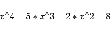

Inhalt Index DeskTop Bronstein

 Computeralgebrasysteme Einführung Aufbau und Umgang mit Computeralgebrasystemen
Computeralgebrasysteme Einführung Aufbau und Umgang mit Computeralgebrasystemen


Unter dem Begriff Term wird eine Anordnung von Objekten verstanden, die durch mathematische Operatoren, in der Regel in der Infix-Form, verknüpft sind, also Basiselemente, die in der Mathematik ständig auftreten. Ein Grundanliegen von Computeralgebrasystemen ist die Umformung von Termen sowie die Lösung von Gleichungen.
| Beispiel |
|
Die folgende Sequenz |
|  | (20.5) |
ist z.B. ein Term, in welchem x eine Variable ist.
Computeralgebrasysteme kennen die üblichen elementaren Funktionen wie Exponentialfunktion, Logarithmusfunktion, trigonometrische Funktionen und deren Umkehrfunktionen sowie eine Reihe spezieller Funktionen. Diese Funktionen lassen sich anstelle von Variablen in Terme einbauen. Auf diese Weise werden neue, komplizierte Terme oder Funktionen erzeugt.